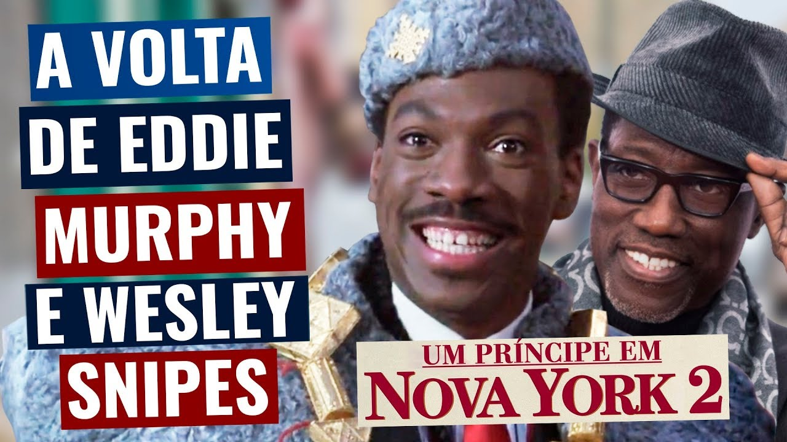

Nerd Noticias
Destaque
CCXP 2021
CCXP Worlds - de 4 a 6 de dezembro. Tudo o que faz da CCXP a CCXP, onde você estiver. Nossos mundos vão se encontrar mais uma vez.
Leia mais!.png)
Última entrevista
Um Príncipe em Nova York 2 ganha data de estreia no Amazon Prime Video
A aguardada sequência do filme Um Príncipe em Nova York (Coming to America, no original), protagonizado por Eddie Murphy, finalmente ganhou uma data de estreia no streaming do Amazon Prime Video
Leia mais!